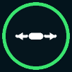

👣 روی زمین نمایشگاه: پشت قوس قرمز خودت بایست و رو به وسط زمین باش. هر وقت به چپ یا راست قدم برداری،
بالکرت هم همراهت روی لبهی زمین جابهجا میشود. چپ و راست همیشه از دید خود تو است.
هاکی بازار · کارگزاری مفید · صفحهی 1 از 2
3چطور ضربه بزنم؟
توپ را با وسط بالکر بزن تا مستقیم برود؛ با لبهها بزن تا کج برود و حریف را غافلگیر کند.
⚡ ضربهی ویژه: اگر درست لحظهی برخورد سریع حرکت کنی، توپ طلایی و تندتر میشود و پیام «واکنش بهموقع!» نمایش داده میشود.
4رنگ دنبالهی توپ
پشت توپ یک دنبالهی نورانی است. رنگش نشان میدهد آخرین بار چه کسی به توپ زده:
فیروزهای: بازیکن 1 زده بنفش: بازیکن 2 زده سفید: هنوز کسی نزده
گویهای وسط زمین به کسی میرسند که رنگ توپ مال اوست. توپ سفید هیچ گویی نمیگیرد.
👀 وقتی توپ به سمتت میآید، یک خط نقطهچینِ کمرنگ نشان میدهد تقریباً کجا میرسد.
5دایرههای وسط زمین (گویهای جایزه)
بعد از اینکه به توپ ضربه زدی، اگر توپ از روی یک گوی رد شود، جایزهاش مال تو میشود.
گویها کمی به سمت توپ کشیده میشوند، پس رد شدن از نزدیکشان هم کافی است.
رنگ سبز یعنی به نفع خودت.

بالکر بزرگ بالکر خودت بزرگتر میشود و راحتتر توپ را میگیری.
بالکر حریف کوچک بالکر حریف کوچک میشود و گرفتن توپ برایش سختتر میشود.
نوسان بازار توپ سریعتر به سمت حریف میرود.
مسیر تصادفی توپ ناگهان تغییر جهت میدهد و حریف غافلگیر میشود.
دو توپ توپ دو تا میشود و هر کدام میتواند گل شود.
تحلیل مسیر نشانت میدهد توپ دقیقاً کجای بالکرت میخورد و به کجا برمیگردد.
⭕ حلقهی دور هر گوی کمکم کوتاه میشود؛ وقتی تمام شود، گوی ناپدید میشود. اگر گوی قرمز دیدی، از آن دوری کن، چون به نفع حریف است.
6نکتههای طلایی
🎯 چشمت به توپ باشد و قبل از رسیدنش، بالکر را جلوی آن ببر.
🟢 بعد از هر ضربه، سعی کن توپ از روی گویهای سبز رد شود.
↗️ با لبهی بالکر بزن تا توپ از دیواره کمانه کند و حریف گیج شود.
🔄 اگر گل خوردی، آماده باش: توپ بعدی به سمت تو میآید.
«بازار همیشه در حرکته؛ آمادهی تغییر باش.» · صفحهی 2 از 2